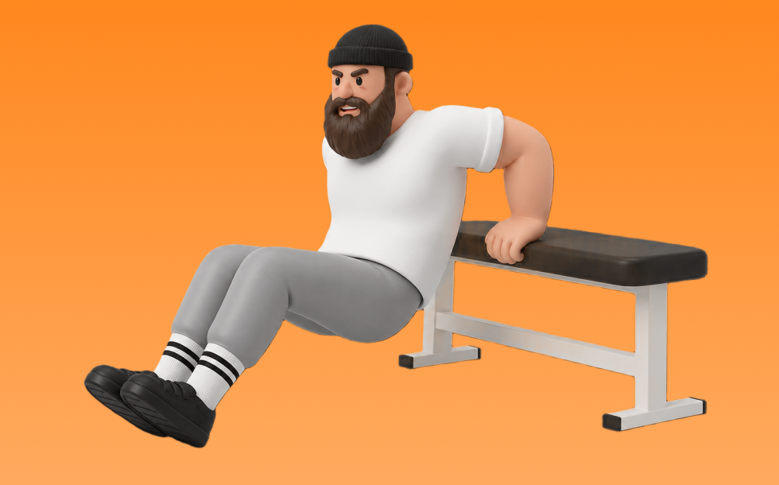

ベンチ・ディップス

ベンチ・ディップスとは、自重を使って「押す」動作で肩前部（三角筋前部）と腕（上腕三頭筋）を鍛える種目です。ベンチに手を置き、肘を曲げて体を下ろし、肩と腕で押し上げる動作を繰り返します。肩前部に刺激が入りやすいのが特徴です。
- 対象部位
- 肩
- 器具
- 自重
- 記録形式
- 回数
- 別名
- ベンチディップス / ディップス(ベンチ) / bench dips / bench dip
YouTube動画
-
【ディップス】肩を壊さずに大胸筋を鍛える正しいフォーム解説
-
【腕トレ】腕や胸にかなり効く！？大胸筋と上腕三頭筋を大きくするディップスの正しいフォームを解説【胸トレ】
-
【トレーニング初心者必見！】二の腕を鍛えるベンチディップスのやり方
-
胸をデカくしたい人はベンチプレスよりも先にコレやって。
-
【保存版】ディップスが効かない人、9割の人がフォームミスしてます。【大胸筋】
-
【筋トレ】ディップスはこうやれ！大胸筋をみるみる発達させる秘密のやり方を伝授！
-
初心者からでも確実に効かせられる！ディップスの日本一分かりやすい解説！【大胸筋下部】
-
ディップスの効果的なやり方｜大胸筋を鍛える3つのポイント
YouTubeショート
-
ベンチディップス（Bench Dips）のやり方と基本フォーム
-
【効果絶大】正しいディップスはこうする。〜肩を痛めない〜
-
ディップスって実は胸トレの最後に最高かも？ #トレーニング #筋トレ #volix #fitness #workout
-
【SGIR】ディップスのフォーム
-
リアルに大胸筋がデカくなったディップスのコツ※エゴイスト
-
このディップスしてる人、肩と肘ぶっ壊れます#筋トレ#胸トレ#腕トレ#ディップス#gymfit
-
ディップスは『姿勢』で効く部位が変わる #GronG #グロング #筋トレ #フィットネス #ディップス #大胸筋 #大胸筋下部 #上腕三頭筋 #腕トレ #胸トレ
-
ベンチディップ
-
上半身トレーニング ベンチ#ディップス #上腕三頭筋 #二の腕 #自重トレーニング
-
【宅トレ/自重トレ必見‼️】ディップスの効果を最大化させるフォームを4ステップで徹底解説❗️ #カリステニクス #自重トレーニング #ディップス #継続は力なり #モチベーション
-
ベンチディップス
-
【山岸秀匡】家でも出来る！ベンチディップスで腕を鍛えよう
-
ベンチプレス世界王者に学ぶ！世界一の大胸筋を作ったディップスを解説！#shorts #筋トレ #ダイエット
-
【ガチトレ】横川尚隆のディップス #横川尚隆 #筋トレ #筋肉事典
-
【ディップス】肩を痛める間違い、正しいフォーム解説
-
【SGIR】胸トレ3種目だけなら何選ぶ？
-
自重のみでデカくなるトレーニーの公園胸トレ【腕立て伏せ】【ディップス】
-
ジムに行かなくても二の腕をほっそり！ベンチディップス
-
【三頭トレ解説】リバースプッシュアップ #筋トレ解説 #上腕三頭筋トレ #三頭トレ
-
ディップスの正しいやり方を解説#40代トレーニング #カリステニクス #宅トレ #懸垂 #ディップス#shorts
-
腕のやり方🔥〜ケーブルプレスダウン基礎編〜 #筋トレ #筋肉 #筋肉社長 #腕トレ
-
持田選手にベンチプレスについてレクチャーしていてもらいました！次はどの種目の解説をやってほしいかコメントしてね！#筋トレ #volix #トレーニング #fitness #ベンチプレス
-
How to go from bench dips to regular dips #beginnercalisthenics
-
【マシン解説】ディップス ベンチ
-
正しい腕立て伏せ3つのポイント #筋トレ
-
Bench dips ベンチディップス
-
正しいサイドレイズ4つのポイント #筋トレ
-
【ディップス】肩を痛めずに大胸筋を鍛える正しいフォーム解説
-
【筋肉つかない】自重トレ3種目 #自重トレーニング #筋トレ #フィットネス
-
How to do bench dips #tricepsworkout #shorts
-
筋トレでこれ使うと世界が変わります #shorts
動作方法
- 安定した姿勢を作り、肩と体幹を固定する
- 狙う部位を意識して、反動を使わずに押す
- 可動域を保ちながら、ゆっくり元に戻す
動作ポイント
- 肩をすくめない
- 手首を寝かせすぎない
- 反動を使いすぎない
ワンポイントアドバイス
- 重量よりも肩の軌道を安定させる
- 首まわりの力みを減らして行う
目的別回数設定
目的や体力に応じた一般的な目安です。無理のない範囲で調整してください。
- 筋力アップ
- 1〜5回
- 筋肥大
- 6〜12回
- 持久力アップ
- 13〜20回
YouTube動画について
動画はYouTubeの公開情報をもとに表示しています。内容は投稿者によるもので、Biggrによる監修ではありません。
アプリを入手
筋トレやトレーニングの記録はBiggrにお任せください。今すぐ無料で使い始められます。